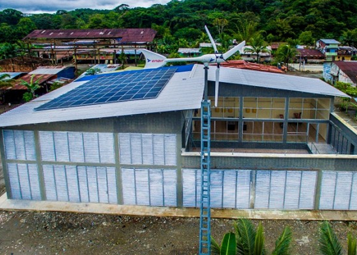
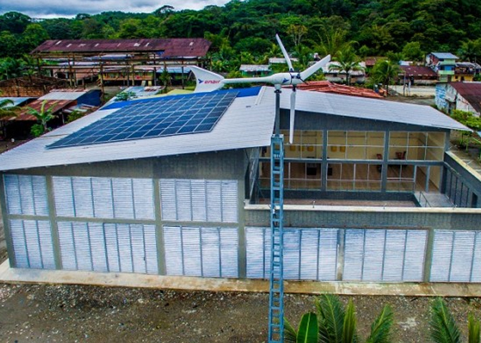

¿Qué es la energía solar?
La energía solar es una fuente de energía renovable que convierte la luz del sol en electricidad mediante el uso de paneles fotovoltaicos. Este recurso es especialmente valioso en regiones como el Chocó, donde el acceso a la red eléctrica es limitado.
Gracias a su disponibilidad diaria y a su bajo impacto ambiental, la energía solar representa una alternativa poderosa para abastecer comunidades rurales, reducir costos energéticos y fortalecer la autosuficiencia local.
Ventajas de la energía solar
- Inagotable y disponible a diario, incluso en días nublados.
- No genera emisiones contaminantes ni ruido durante su funcionamiento.
- Reducción significativa de la factura eléctrica a largo plazo.
- Instalaciones modulares: se adapta a viviendas, escuelas, granjas y más.
- Ideal para regiones remotas como el Chocó, donde otras fuentes son costosas.
Beneficios adicionales
- Fomenta la independencia energética de las comunidades rurales.
- Genera empleos locales en instalación y mantenimiento de sistemas solares.
- Aumenta el valor de las propiedades equipadas con paneles solares.
- Reduce la huella ecológica y contribuye al cumplimiento de metas ambientales.
- Puede combinarse con otras tecnologías como turbinas eólicas o baterías inteligentes.
Avances tecnológicos
En los últimos años, la energía solar ha evolucionado considerablemente, permitiendo un rendimiento más eficiente y accesible en diversos climas:
- Paneles bifaciales: captan energía por ambos lados, aumentando la producción.
- Modelos flexibles y portátiles: ideales para emergencias o movilidad.
- Sistemas de almacenamiento avanzados: baterías de litio con mayor duración.
- Integración arquitectónica: paneles que se incorporan estéticamente en techos o fachadas.
Aplicaciones en el territorio
- Hogares: energía para electrodomésticos, iluminación LED, ventilación y refrigeración.
- Agricultura: bombas de agua solares, secado de cultivos y conservación de alimentos.
- Educación: escuelas rurales con acceso a computadoras y conectividad mediante energía solar.
- Salud: centros de salud autónomos con refrigeración para vacunas y equipos médicos operativos.
- Comunidad: sistemas solares para alumbrado público, cargadores comunitarios y redes Wi-Fi rurales.
Impacto ambiental positivo
La implementación de energía solar no solo mejora la calidad de vida, sino que también protege el entorno natural:
Reducción de emisiones
Evita toneladas de CO₂ al año, mejorando la calidad del aire y combatiendo el cambio climático.
Menos combustibles fósiles
Disminuye la dependencia del diésel y la gasolina, que suelen ser costosos y contaminantes.
Preservación hídrica
No requiere agua para generar electricidad, a diferencia de muchas otras fuentes convencionales.
Seguridad energética
Provee autonomía energética frente a cortes o fluctuaciones en el servicio convencional.
Galería Solar
 
